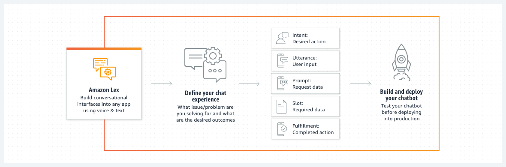
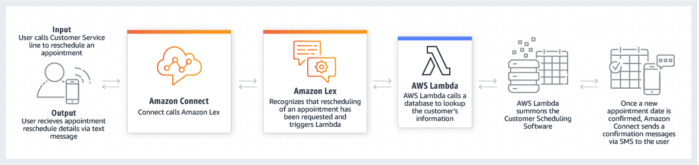

Beschreibung
Amazon Lex ist ein Service, der es ermöglicht, Konversationsschnittstellen in jede Anwendung zu integrieren, indem Sprache und Text verwendet werden. Der Dienst nutzt fortgeschrittene Deep-Learning-Funktionen, darunter automatische Spracherkennung (ASR) zur Umwandlung von Sprache in Text und natürliches Sprachverständnis (NLU) zur Erkennung der Absicht des Textes.
Dadurch können Entwickler Anwendungen mit äußerst ansprechenden Benutzererlebnissen und lebensechten Konversationsinteraktionen erstellen. Angenommen, ein Softwareentwickler arbeitet an einer Anwendung für ein Startup. Das Unternehmen möchte eine Konversationsschnittstelle integrieren, die es Kunden ermöglicht, über Sprache und Text mit der App zu interagieren.
In diesem Szenario könnte Amazon Lex eine ideale Lösung sein, da es fortschrittliche Funktionen für die Sprachverarbeitung bietet. Dies ermöglicht es Kunden, auf natürliche Weise mit der Anwendung zu kommunizieren, sei es durch gesprochene Sprache oder Texteingaben. Der Entwickler kann mithilfe von Amazon Lex eine robuste Konversationslogik erstellen, die auf die Bedürfnisse der Benutzer zugeschnitten ist. Dies ermöglicht dem Startup, eine ansprechende und intuitive Benutzeroberfläche zu schaffen, die Sprache und Text für eine nahtlose Interaktion mit der Anwendung unterstützt.
* Nutzt fortgeschrittene Deep-Learning-Funktionen wie automatische Spracherkennung (ASR) und natürliches Sprachverständnis (NLU).
* Erlaubt Entwicklern die Erstellung von Anwendungen mit ansprechenden Benutzererlebnissen und lebensechten Konversationsinteraktionen.
* Ideal für Unternehmen und Startups, die Konversationsschnittstellen in ihre Anwendungen integrieren möchten.
* Bietet natürliche Kommunikation per Sprache und Text, um Kundeninteraktionen zu verbessern.
* Entwickler können robuste Konversationslogik erstellen, die auf die Bedürfnisse der Benutzer zugeschnitten ist.
* Ermöglicht die Schaffung ansprechender und intuitiver Benutzeroberflächen für eine nahtlose Interaktion mit der Anwendung.
* Amazon Lex: Service zur Integration von Konversationsschnittstellen in Anwendungen über Sprache und Text.
Schlüsselwörter
> > > Schlüsselworte bzw. Schlagworte sollen uns dabei helfen, einen Service leichter zu erkennen, wenn es um Prüfungsfragen geht. Ließ dir die Fragen richtig durch und achte auf folgende Schlüsselworte. Sie können dir bei der Beantwortung der Fragen helfen.
- Container-Orchestrierung: ECS ermöglicht daren von Docker-Containern in der AWS-Cloud.
- Container-Definitionen: Definition von Containber die Verwendung von Aufgaben (Tasks) und Services.
- Docker-Integration: ECS unterstützt Docker-Container und ermöng von Docker-Images.
- Task-Definitionen: Spezifikationen, wie eine Aufgabe (Task) in einvon Services, um langfristig laufende Anwendungetartet und Aufgaben ausgeführt werden.
- Auto Scaling: Automatische Anpassung der Anzahl von las basieinierbaren Metriken.
- Load Balancing: Integration mit dem Elastic Load Balancing-Dienst für die Lr.
- AWS Fargate: Option zur Ausführung von Containern ohne die Notwendigkeit, EC2.
- Integration mit Amazon ECR: Nahtlose Integration mit d
Grafische Erklärung
 Prüfung Fragen
- Ein E-Commerce-Unternehmen möchte für seinen Kundenservice einen Chatbot mit natürlichem Sprachverständnis (NLU) erstellen. Welchen AWS-Service würden Sie als Cloud-Practitioner verwenden?
- Welche der folgenden Funktionen ermöglicht es Unternehmen, den AWS Lex-Service effektiv zu nutzen?
- Ein E-Commerce-Unternehmen möchte für seinen Kundenservice einen Chatbot mit natürlichem Sprachverständnis (NLU) erstellen. Welchen AWS-Service würden Sie als Cloud-Practitioner verwenden?